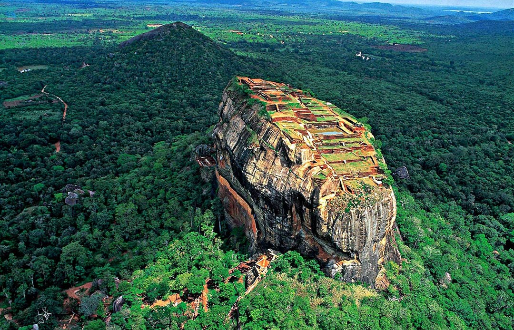
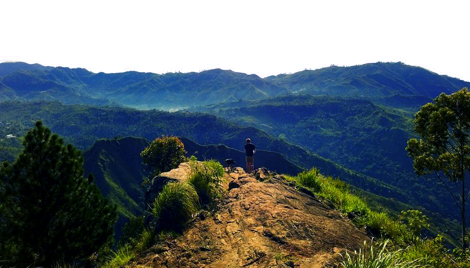

Temple of the tooth (Kandy District)

Considered as one of the most important temples of Buddhists in Sri Lanka, the Temple of Tooth Relic is located to the north of Kandy Lake and is one of the most remarkable places to visit in Kandy Sri Lanka. The sacred tooth of Lord Buddha enshrined in the temple makes it one of the popular Kandy tourist places. The room housing the tooth is open to devotees to offer their prayers. However, nobody gets to see the tooth because it is kept in a golden casket inside a stupa-like structure. The temple is housed in the royal palace complex of the former Kingdom of Kandy. One of the best places to see in Kandy, this temple is of great importance due to the belief of the country on the tooth. The temple has rituals thrice a day. The temple was designated a UNESCO World Heritage Site 1988. The temple still stands strong even after facing attacks twice.
Sigiriya (Matale District)
Sigiriya or Sinhagiri is an ancient rock fortress located in the northern Matale District near the town of Dambulla in the Central Province, Sri Lanka. It is a site of historical and archaeological significance that is dominated by a massive column of rock around 180 metres (590 ft) high.[2] According to the ancient Sri Lankan chronicle the Culavamsa, this area was a large forest, then after storms and landslides it became a hill and was selected by King Kashyapa (477 – 495 AD) for his new capital. He built his palace on top of this rock and decorated its sides with colourful frescoes. On a small plateau about halfway up the side of this rock he built a gateway in the form of an enormous lion. The name of this place is derived from this structure — Sīnhāgiri, the Lion Rock (an etymology similar to Sinhapura, the Sanskrit name of Singapore, the Lion City). The capital and the royal palace were abandoned after the king's death. It was used as a Buddhist monastery until the 14th century.[3] Sigiriya today is a UNESCO listed World Heritage Site. It is one of the best preserved examples of a ncient urban planning
World's End (Nuwara Eliya District)
World's End is located within the Horton Plains National Park in Nuwara Eliya District, Sri Lanka. Meaning that this is the place which has the highest gap in Sri Lanka. It is a sheer cliff. It is one of the most visited parts of the Park, and a key tourist attraction in the Nuwara Eliya District and the country at large. This place highlights the rich bio-diversity of Sri Lanka. This is a trail with remarkable diversity of terrain, weather, vegetation etc. It starts off with a stretch across the beautiful paddy fields. Climb through pines plots, grass lands, Montana forest patches, tea estates and finally through a cloud forest to reach Worlds End. One can view the town of Balangoda which is located way below your point of observation. Walk alone through the silent plain of Horton plain to the end of the world. Stand 2000 Metres high at the edge of the cold frosted grass land and lower your eyes towards the next land mark - the tea plantations 900 Meters below. Gaze onward beyond the waves of mountains, filigree of water falls, hazy lakes and paddy fields to the pink salters of Hambantota and shining sea in a horizontal sweep.